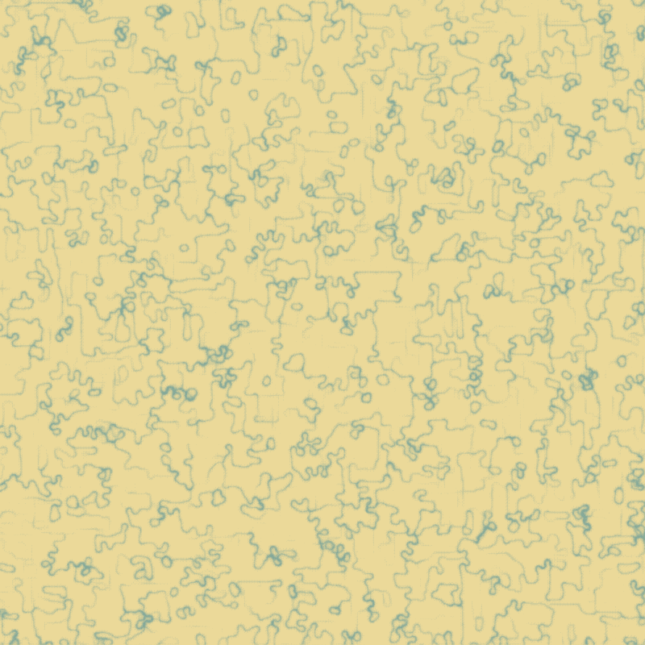

Physarum simulation
Physarum polycephalum is a slime mold that grows to form efficient transport networks, solving the shortest path problem. Simulations of it can create pleasing patterns somewhat similar to Conway's Game of Life, both demonstrating emergent behaviour where a simple set of rules applied to many individual cells or particles results in complex behaviours emerging.

These captures are taken from a simulation I wrote in Rust using WebGPU.
Using a GPU it is possible to simulate millions of particles in real-time.
The simulation is parameterised, so many different variations are possible.


Implementation
There are many "agents" spread throughout a 2D world. Each agent has a position (x and y) and a
heading (angle) and is moving at a constant speed. Each time step every agent senses the world
around it, detecting the concentration of a chemical left by other agents, and then updates its
heading to turn towards higher concentrations of the chemical. Agents then deposit the chemical
at their current position which diffuses and decays over time.
Over many time steps the agents form a network of paths that connect to form a transport network.
In the real world, physarum has been used to
validate the Tokyo metro network
(the power of slime!)
In the simulation the agents are updated in parallel using compute shaders, allowing millions to
be simulated in realtime on my M2 MacBook Air. The world that they sense is stored in a texture with
each texel containing the concentration of the chemical at that position.
Run in browser
The simulation can be run in the browser by clicking here (WebGPU is required, currently this is only on desktop using the latest Chrome).
Tools
-
Rust
I work a lot in C++ but have adopted a personal philosophy to not use it for new projects. C++ has done well but it will be eventually replaced by more modern languages. Rust has many improvements on C++ making it quicker to write and safer to use one you grasp the basics. I'd recommend exercism if you'd like to make the switch. -
wgpu
A graphics library for Rust based upon the WebGPU API, very low level. If you compile to WebAssembly it can run in the browser.
Future ideas
- Runs of the simulation usually result in agents clumping up at a decreasing number of positions, because there is no mechanism to prevent this. This could either be done by allowing only one agent per texel, or by adding a repulsion force to very high chemical concentrations.
- Higher resolution simulations, currently it is limited to the texture size limit. This can probably be overcome by using multiple textures to represent the 2D world.
- Feeding simulation input and getting output. I've played with encouraging the agents to certain areas
and not others but this has been pretty crude so far:

External links
- Characteristics of pattern formation and evolution in approximations of physarum transport networks - a paper describing the operation of the simulation.
- Sage Jenson's work on a physarum simulation.